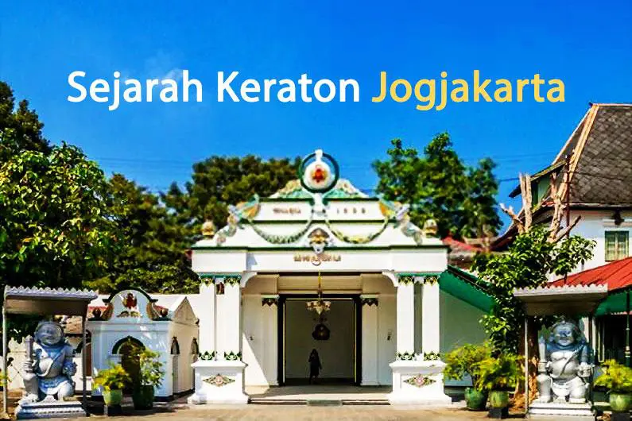
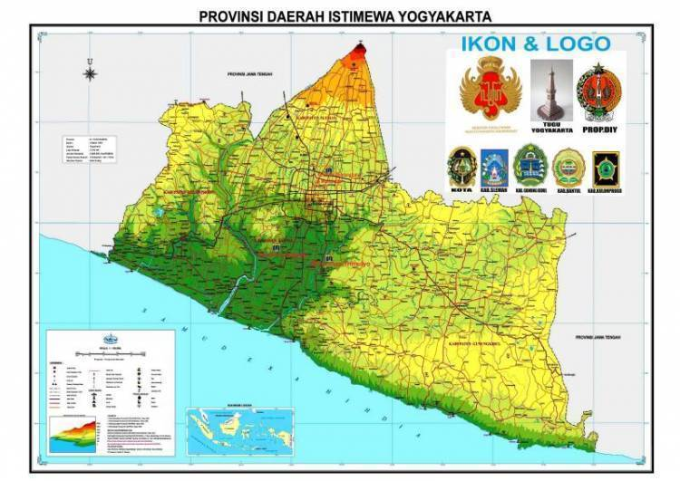
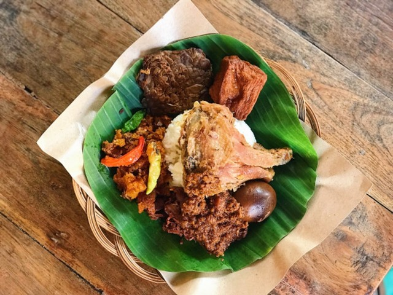

Daerah Istimewa Yogyakarta biasa disebut dengan kota yang beragam,
seperti kota pendidikan, kota wisata dan kota budaya. Pusat ibu kota
terletak pada Kota Yogyakarta
Sejarah

Gambar Sejarah
Yogyakarta, kota modern yang tertata rapi, menjadi tempat hunian
yang nyaman dengan masyarakat yang berkebudayaan dan dengan
pemerintahan yang berorientasi pada pelayanan publik Suara Warga.
Berdirinya Kota Yogyakarta berawal dari adanya Perjanjian Gianti
pada Tanggal 13 Februari 1755 yang ditandatangani Kompeni Belanda di
bawah tanda tangan Gubernur Nicholas Hartingh atas nama Gubernur
Jendral Jacob Mossel. Isi Perjanjian Gianti : Negara Mataram dibagi
dua : Setengah masih menjadi Hak Kerajaan Surakarta, setengah lagi
menjadi Hak Pangeran Mangkubumi. Dalam perjanjian itu pula Pengeran
Mangkubumi diakui menjadi Raja atas setengah daerah Pedalaman
Kerajaan Jawa dengan Gelar Sultan Hamengku Buwono Senopati Ing Alega
Abdul Rachman Sayidin Panatagama Khalifatullah.
Geografi

Gambar Geografi
Secara geografis Provinsi D.I. Yogyakarta terletak pada
8o30'-7o20' LS dan 109o40'-111o0' BT; luas wilayah 3.185,80 km2 ;
berbatasan dengan: a. Sebelah selatan berbatasan Samudera
Indonesia dan dibatasi dengan garis panjang pantai sepanjang 110
km.
Wisata
ogyakarta atau dikenal oleh masyarakat setempat dengan nama Jogja
atau Yogya adalah ibu kota sekaligus pusat pemerintahan dan
perekonomian dari Daerah Istimewa Yogyakarta, Indonesia. Kota ini
adalah kota besar yang mempertahankan konsep tradisional dan budaya
Jawa
Museum Vanderburg
Museum Vanderburg
Jika kita melintasi jalan Malioboro, disepanjang jalan tersebut
sampai titik nol kilometer tidak hanya berdiri bangunan pertokoan
melainkan pula bangunan peninggalan masa kolonial, salah satunya
Benteng Vredeburg. Benteng Vredeburg merupakan salah satu bangunan
yang menjadi saksi bisu peristiwa-peristiwa bersejarah yang
terjadi di Yogyakarta semenjak pemerintah kolonial Belanda masuk
ke Yogyakarta.
Pantai Parangtritis
Pantai Parangtritis
Pantai Parangtritis terletak 27 km selatan Kota Jogja dan mudah
dicapai dengan transportasi umum yang beroperasi hingga pk 17.00
maupun kendaraan pribadi. Sore menjelang matahari terbenam adalah
saat terbaik untuk mengunjungi pantai paling terkenal di
Yogyakarta ini. Namun bila Anda tiba lebih cepat, tak ada salahnya
untuk naik ke Tebing Gembirawati di belakang pantai ini. Dari sana
kita bisa melihat seluruh area Pantai Parangtritis, laut selatan,
hingga ke batas cakrawala.
Kuliner
Yogyakarta yang terkenal membumi dan akrab di hati selalu mengundang
pelancong dari penjuru Nusantara untuk selalu kembali. Apalagi
ditambah reputasi Kota Jogja yang kaya jajanan jalanan yang ringan
di kantong, acara jalan-jalan makin asyik tentunya.
Gudeg

Gudeg Yogyakarta
Gudeg adalah salah satu masakan khas indonesia yang terkenal akan
kelezatannya. Masakan ini merupakan masakan tradisional dan khas
Provinsi Yogyakarta dan Jawa Tengah Indonesia. Dalam
perkembangannya, masyarakat mengenal gudeg terkenal berasal dari
Yogyakarta sehingga membuat kota ini dikenal dengan nama Kota
Gudeg.
Bakpia pathuk
Bakpia Pathuk Jogja
Bakpia adalah makanan yang terbuat dari tepung terigu yang
dipanggang dengan isian berupa kacang hijau dicampur gula. Namun
makanan yang dianggap khas Jogja ini ternyata sebenarnya bukan
asli berasal dari Yogyakarta, melainkan berasal dari Cina. Menurut
penelitian yang dilakukan Amelia Puspita Sari dari Universitas
Gadjah Mada (UGM) dengan judul Bakpia Sebagai Bentuk Akulturasi
Budaya Indonesia dan Tiongkok di Bidang Kuliner (Studi Kasus
Bakpia 29), tertulis bakpia terbentuk dari pengaruh akulturasi
budaya Tionghoa dan Jawa. Perpaduan kuliner ini berhasil
menghidangkan kue enak dan nikmat. Bakpia menjadi bukti, benturan
budaya tidaklah berbahaya. Bakpia berasal dari dialek Hokkian
dengan nama asli Tou Luk Pia yang secara harfiah artinya kue atau
roti yang berisikan daging.